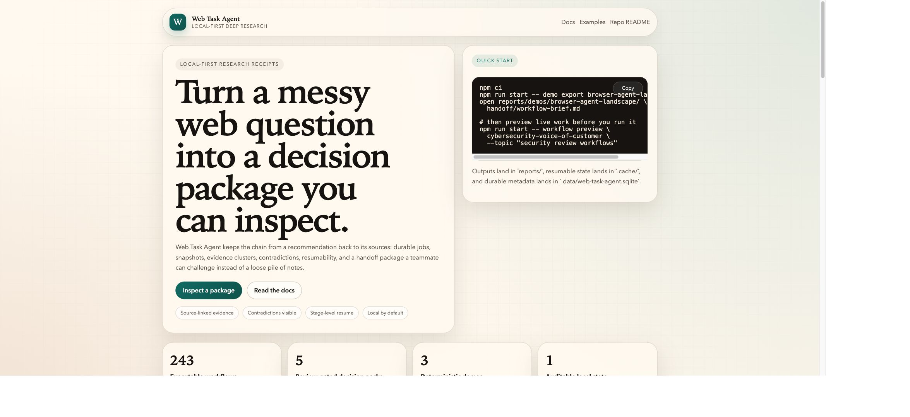

THE VERIFICATION LAYER FOR AI RESEARCH
Verify the decision, not just the answer.
Turn a run from any research agent into a local Decision Receipt with claims, excerpts, contradictions, source changes, and integrity attached — so a reviewer can challenge it without trusting the model or uploading the evidence.
Integrity checked
Claims linked to excerpts
Contradictions explicit
Offline by default
ONE RECEIPT · ONE CHANGED FILE
Can you catch the broken evidence boundary?
A synthetic AI research handoff still reads plausibly after its snapshot changes. Choose the exact failure, then let the real local verifier reveal the file.
No upload · no account · no telemetry
Take the 60-second challenge
PRODUCT PROOF
Inspect integrity before you configure a browser or model.
It is a real, versioned fixture with a decision, explicit invalidation conditions, and source cards. It needs no key, browser session, or live request to inspect.
Verify a receipt locally →
What It Actually Does
Research, storage, recovery, and operator control in one local tool.
Long-running research jobs
Plan a job, search multiple queries, fetch result pages in batches, extract evidence, synthesize findings, and write a report.
Durable evidence layer
Store sources, documents, snapshots, extractions, evidence clusters, contradictions, and graph links in SQLite for reuse across runs.
Recovery instead of restart
Leases, heartbeats, cache checkpoints, queue recovery, and stage-level resume keep work moving after interruptions.
Workflow packages, not raw scraps
Topic-based folders include reports, briefs, plan files, raw research snapshots, pipeline manifests, and prompt traces.
Queue, worker, and job controls
Queue long jobs, run a local worker, pause or cancel in flight, resume later, rerun from stored configuration, and inspect live logs.
Local dashboard and API
Serve a management UI plus JSON endpoints for jobs, queue state, recoverable runs, detail views, controls, and SSE event streams.
Execution Model
Each run follows a durable research pipeline.
Plan
Generate a bounded job plan and research query set.
Search
Use a search adapter to gather result candidates per query.
Fetch
Open result pages in batches and checkpoint between fetch slices.
Extract
Persist readable pages, structured evidence, and raw snapshots.
Synthesize
Build summaries from persisted evidence, clusters, and contradictions.
Package
Write the report, drafts, workflow brief, and runtime manifests.
Persistence
- Jobs, steps, leases, controls, queue state
- Sources, canonical URLs, documents, extractions
- Evidence clusters, contradictions, graph links
- Artifact metadata for reports and handoff files
Recovery
- Stale lease recovery for long jobs
- Stage-aware resume for search, fetch, and extract
- Pause, cancel, resume, rerun, retry controls
- Failure-mode coverage for interrupted checkpoints
Real Workflows
Start with a decision, then pick the smallest useful workflow.
No-key proof
Inspect a research receipt
Open the receipt first, then inspect the brief, report, evidence and manifest contract before you configure an LLM or browser.
npm run start -- demo export \
workflow-quality-auditCatalog discovery
Choose from 240 focused cases
Find a distinct voice-of-customer, pricing, competitor, retention, or market-entry workflow by decision and domain.
npm run start -- workflow list \
--category "Pricing and Packaging"Human review first
Plan a decision pack
Generate a 2–4 step plan without silently opening sites or spending model calls in a chain.
npm run start -- pack plan validate-an-idea \
--topic "offline document signing"Package Shape
A workflow run produces an operator-facing package, not just one markdown file.
report.md
handoff/
README.md
package-manifest.json
research-summary.md
workflow-brief.md
drafts/
post-draft.md
comments-draft.md
plan/
plan.json
raw/
research/
runtime/
llm-prompt-traces.json
pipeline-manifest.jsonHandoff
The brief and README give the short operator view first, before the full report.
Raw snapshots
Raw research JSON and persisted evidence let you audit or extend a run later.
Runtime traces
Prompt/version traces and pipeline manifests make local debugging much easier.
Operator Surface
Work from the terminal or the local dashboard.
CLI
npm run start -- workflow enqueue android-opportunity \
--topic "expense tracking for local merchants"
npm run start -- worker run --once
npm run start -- queue list
npm run start -- job logs <job-id> --limit 100Management API
GET /
GET /api/health
GET /api/jobs
GET /api/jobs/:id
GET /api/jobs/:id/events
GET /api/jobs/:id/events/stream
POST /api/jobs/:id/control
GET /api/queue
POST /api/queue/:id/control
GET /api/recoverableDocumentation